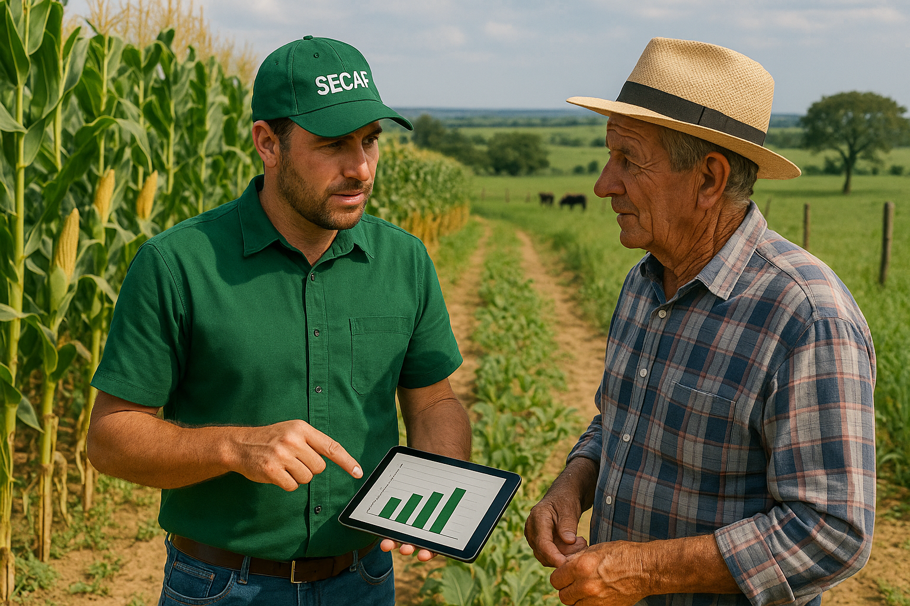

Crédito Rural
O Crédito Rural é uma política pública essencial para o desenvolvimento da agropecuária nacional, proporcionando recursos para custeio, investimento, comercialização e industrialização da produção agropecuária.
Objetivo
Incentivar a produção agrícola e pecuária com financiamento acessível, promovendo modernização, aumento de produtividade e melhoria na renda dos produtores rurais.
Modalidades de Crédito Rural
1. PRONAF (Programa Nacional de Fortalecimento da Agricultura Familiar)
Voltado para agricultores familiares, com condições facilitadas e juros reduzidos.
- PRONAF Custeio: Para despesas com plantio, manejo e colheita.
- PRONAF Investimento: Para aquisição de máquinas, construções e melhorias na propriedade.
- PRONAF Jovem: Para jovens rurais desenvolverem projetos produtivos.
- PRONAF Mulher: Apoio a iniciativas lideradas por mulheres rurais.
- PRONAF Semiárido: Financiamento de atividades em regiões semiáridas.
2. PRONAMP (Programa Nacional de Apoio ao Médio Produtor Rural)
Voltado a médios produtores com renda bruta anual de até R$ 2,4 milhões.
- Taxas de juros mais atrativas.
- Crédito para custeio e investimento.
3. MODERFROTA
Programa de Modernização da Frota de Tratores Agrícolas e Colheitadeiras.
- Financiamento de tratores, colheitadeiras, pulverizadores e demais máquinas.
- Prazo de até 7 anos com carência de 1 ano.
4. INOVAGRO
Estimula o uso de tecnologias modernas para aumentar a produtividade.
- Investimentos em automação, conectividade, softwares de gestão rural, etc.
5. ABC+ (Programa Agricultura de Baixo Carbono)
Financia práticas sustentáveis e tecnologias que reduzam emissões de carbono.
- Recuperação de pastagens, integração lavoura-pecuária-floresta, plantio direto, etc.
6. PRODECOOP
Destinado a cooperativas agropecuárias para agregar valor à produção dos associados.
7. PROCAFÉ
Voltado ao setor cafeeiro para investimentos em reestruturação, renovação e custeio da produção de café.
8. PROIRRIGA
Financiamento de sistemas de irrigação e infraestrutura hídrica em propriedades rurais.
9. PCA (Programa para Construção e Ampliação de Armazéns)
Crédito para construção e ampliação de armazéns nas propriedades ou cooperativas.
10. PRODETER
Programa de Desenvolvimento Territorial que apoia cadeias produtivas locais com foco no desenvolvimento regional.
Quem pode acessar o Crédito Rural?
- Agricultores familiares (via PRONAF)
- Médios produtores (via PRONAMP)
- Grandes produtores e cooperativas
Como acessar?
Procure uma instituição financeira autorizada (como Banco do Brasil, Caixa, Sicredi, Sicoob ou cooperativas) e apresente um projeto técnico elaborado por um engenheiro agrônomo ou técnico habilitado. A SECAF pode auxiliar com todo o processo.
Fale conosco
Entre em contato para saber qual linha de crédito se encaixa melhor no seu perfil. A equipe da SECAF está pronta para te ajudar!